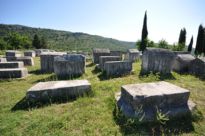

Introduction: What are stećci?
 A stećak is a medieval Bosnian tombstone that can be found in almost every part Bosnia and Herzegovina, the northwest part of Montenegro, western part of Serbia, and southern part of Croatia. Stećci are a unique part of medieval Bosnian history, and they are one of the main monumental evidences of the existence of medieval Bosnia. There are over 75000 known Bosnian tombstones on the Balkan Peninsula, but sadly, approximately 95% of them are damaged and require urgent restoration or protection. Some of the most famous and important dig sites for stećaks are: Radimilja at Stoca, Bitunje at Stoca, Lord Nikolić’s Necropolis, and the Šabić village Necropolis.
During medieval times, stećci were organized in Necropolises, or “cities of the dead”. Over 100 Necropolises have been located in Bosnia and Herzegovina, mostly concentrated near ancient settlements or castles. Necropolises are sacred places to the people of Bosnia, so native-born people try to avoid them, out of respect for the fallen and the dead.